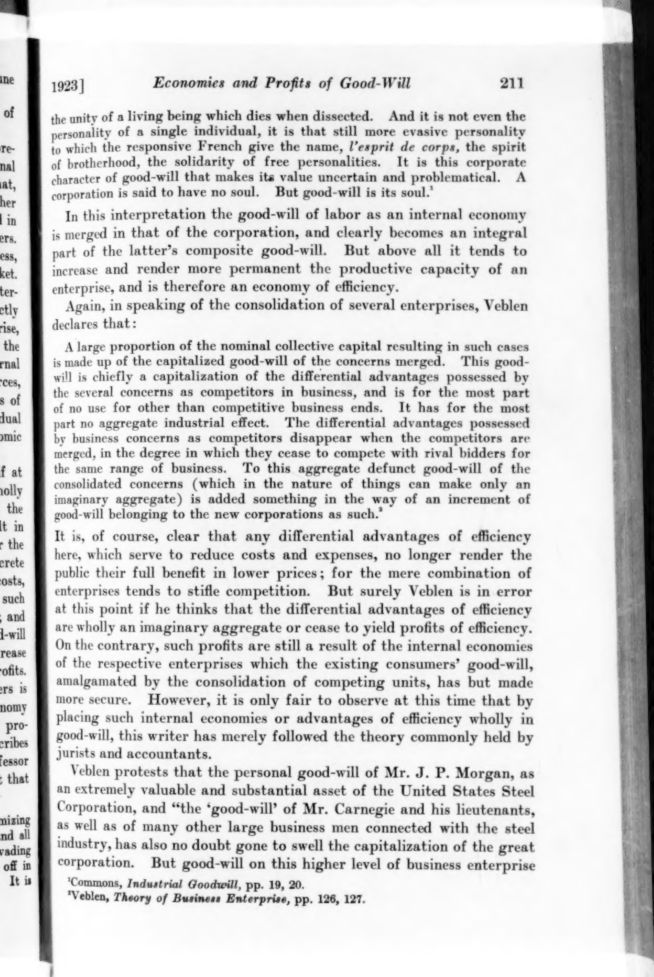

Hastings, 1923: a velocidade com que a moeda volta a comprar bens novos
Leitura: 9 min
Hudson B. Hastings define a velocidade de circuito da moeda, reescreve a equação de troca em números-índice e lista 31 fatores que mudam a frequência com que o dinheiro compra bens novos de consumo.


Calcular um preço médio por libra que valesse ao mesmo tempo para trigo, seda, diamantes, gasolina, jornais e carvão seria matematicamente possível, escreve Hudson B. Hastings, mas não convenceria nem a razão nem a imaginação. O exemplo serve para justificar o instrumento central do artigo, uma equação de troca escrita só com números-índice. Hastings, da Pollak Foundation for Economic Research, de Newton, Massachusetts, apresenta o texto como continuação de “The Circuit Flow of Money”, de William Trufant Foster, publicado na Review em setembro de 1922, e agradece sugestões de Waddill Catchings, do próprio Foster e de Irving Fisher.
Por que olhar só para os bens novos?
O interesse público, diz o autor, concentra-se nos preços e no volume de produção de bens tangíveis novos: o consumidor médio gasta mais da metade da renda com eles, e mais gente trabalha em produzi-los do que em qualquer outra atividade. Além disso, o emprego máximo nos serviços parece resultar do emprego máximo entre os produtores de bens, e não o contrário, e as flutuações de emprego são muito maiores entre os produtores de bens.
A explicação está na natureza dos produtos. Quase todos os bens podem ser estocados por meses antes de consumidos, enquanto os serviços são consumidos no momento em que são prestados. Se os comerciantes passam a esperar preços bem mais baixos, podem suspender as encomendas e viver dos estoques; depois de uma crise, os produtores de matéria-prima podem quase parar por meses. Com os serviços isso não acontece: não há estoque pesando sobre o mercado, e o consumo só pode ser adiado muito pouco. Por isso a demanda e os preços dos bens novos merecem atenção especial.
O que é a velocidade de circuito?
O ponto de partida é que, salvo exceções desprezíveis, os bens só passam ao consumidor em troca de dinheiro. O crédito pessoal do consumidor fica como ressalva. O valor dos bens que passam ao consumo num período depende então de dois fatores: a quantidade de moeda em circulação, moeda corrente e crédito bancário disponíveis para desembolso imediato, e a rapidez com que ela é usada para comprar bens novos de consumo.
Essa rapidez é a velocidade de circuito, C, o número médio de vezes em que cada centavo da moeda em circulação é usado para comprar bens de consumo num intervalo de tempo. Com M para a moeda, p para o preço médio de cada mercadoria e q para a quantidade paga, o autor escreve a equação de troca dos bens novos: MC = Σpq. Ela é só aproximada, porque M e C mudam o tempo todo, mas isso não impediria tirar dela conclusões.
Por que uma equação em números-índice?
Para tratar dos preços, seria melhor ter algo como MC = PT, com P o preço médio de todos os bens e T o número de unidades vendidas. Como não há média de preços que faça sentido em unidades físicas, Hastings reescreve a equação com índices, em que cada fator é a razão entre o valor do ano e o de um ano-base, e a designa como equação-índice de troca. No original, os quatro fatores levam o subscrito I, de índice.
A vantagem, para o autor, é a homogeneidade. Na equação de Fisher, MV + M’V’ = PT, os fatores do lado esquerdo são quantidades absolutas, P é um índice e T não é nem um total físico nem um índice. Na equação-índice todos os fatores são da mesma natureza, e por isso se pode raciocinar com eles como se fossem absolutos: se C dobra de um ano para outro, o índice de C também dobra, qualquer que seja o ano-base. Daí conclusões como esta: o nível de preços dos bens novos de consumo varia diretamente com a velocidade de circuito, se a moeda e o volume de vendas ficarem constantes. M, P e T podem ser medidos com boa precisão; a determinação independente de C, admite o autor, parece apresentar dificuldades insuperáveis, mas o que interessa são as suas variações.
Em que C difere da velocidade de circulação?
A velocidade de circulação, V, é a frequência com que a moeda, crédito bancário incluído, troca de mãos em todas as transações: títulos, imóveis, bens usados, bens em processo de produção e distribuição, serviços. A velocidade de circuito conta só as compras de bens novos tangíveis pelo consumidor. Para Hastings, o nível de preços de varejo dos bens novos é função de C, e não de V, enquanto o nível de preços de todos os bens e serviços é função de V, e não de C. Se as interrupções da atividade econômica vêm de colapsos no mercado de bens novos, como sustenta a tese do início, é para C que se deve olhar.
O que faz C mudar?
Mantido o resto constante, C muda com o número de mãos por que o dinheiro passa num circuito, com o tempo entre receber e gastar e com a parte da moeda que nunca compra bens de consumo. Hastings lista 31 fatores, muitos já apontados por Fisher e por Foster e Catchings, em três grupos. O primeiro reúne os que pouco dependem do ciclo. Diminuem C a maior eficiência na produção de bens, que libera trabalhadores para os serviços, o crescimento das empresas que não produzem bens tangíveis ou produto acabado, a produção organizada, a intermediação, o comércio a distância, a tributação e os saldos mínimos exigidos pelos bancos. Aumentam C as contas de crédito no comércio, os cheques, a sincronização entre receitas e despesas, a urbanização, o financiamento da produção por empréstimos bancários, a maior frequência dos dias de pagamento, a integração industrial e o papel comercial.
A divisão do trabalho entre empresas, típica da indústria moderna, multiplicou as transações que não são compras de consumo. Por isso, para o autor, C provavelmente é bem menor do que há cinquenta anos e várias vezes menor do que há cem, embora possa ter subido recentemente.
O segundo grupo muda com as fases do ciclo: especulação, dinheiro emprestado à vista, a proporção entre lucros e custos, o dinheiro à espera de investimento ou guardado para os maus dias, a poupança, os gastos com bens intangíveis, os preços e as expectativas. A especulação com títulos financiada pelos bancos tem velocidade de circuito quase nula, porque o dinheiro fica parado nos centros especulativos até a liquidação; mas a queda de C é compensada pelo aumento de M. Os dividendos, pagos em geral a cada três meses e gastos em maior proporção fora do consumo de bens, teriam velocidade de circuito menor que o dinheiro pago como custo; o imposto de renda progressivo aumentaria a diferença.
O terceiro grupo é temporário: mudanças de tarifa alfandegária, entrada e saída de ouro e instabilidade cambial, que leva a reter dinheiro à espera de câmbio melhor. No conjunto, o autor considera certo que C cai quando a prosperidade cresce, por causa da especulação, mas lembra que essa queda é quase toda compensada pelo aumento de M.
O que se pode concluir?
Hastings resume em oito pontos. Há sempre mudanças que alteram C, feitas por pessoas que não sabem nem se preocupam com seu efeito; ninguém tenta controlá-las; só pelas leis do acaso C não ficaria constante; e poucos desses fatores são compensados por mudanças simultâneas na quantidade de moeda. Logo, as variações do nível de preços dos bens novos se explicam melhor pela equação-índice do que pela equação geral de troca, mais para a tendência secular do que para o ciclo.
“Não decorre, porém, que essa conclusão seja necessariamente falsa; é um tema digno de pesquisa aprofundada.” (It does not follow, however, that this conclusion is necessarily false; it is a subject worthy of thorough research.)
A conclusão em questão é a de que uma queda prévia de C esteja entre as principais causas da queda de preços depois de um surto de atividade. A análise, diz o autor, não a sugere, e não há evidência estatística a favor dela; mas fica em aberto.
Na minha leitura
Na minha leitura, o artigo se apresenta como continuação do texto de Foster sobre o fluxo de circuito da moeda e agradece sugestões de Catchings, Foster e Fisher. Hastings faz uma operação de definição: separa, dentro da velocidade da moeda de Fisher, a parte que corresponde à compra de bens de consumo novos e propõe que é ela que importa para o nível de preços que o público sente.
O texto é sobretudo conceitual e classificatório. A lista de 31 fatores registra o que o autor considera evidente e o que exige explicação, e as conclusões vêm com ressalvas explícitas: C não pode ser medido diretamente, os efeitos de vários fatores levam ponto de interrogação, e a hipótese de que a queda de C precede as crises fica declarada como não demonstrada.
Glossário
- Velocidade de circuito (C)
- número médio de vezes em que cada unidade de moeda em circulação compra bens novos de consumo num período.
- Velocidade de circulação (V)
- frequência com que a moeda troca de mãos em todas as transações, inclusive títulos, imóveis e bens em processo.
- Equação de troca
- identidade que iguala a moeda multiplicada por sua velocidade ao valor das transações.
- Número-índice
- razão entre o valor de uma grandeza num período e o seu valor num período-base.
- Call money
- empréstimo bancário resgatável à vista, usado sobretudo para financiar compras de títulos.
Fontes
- The Circuit Velocity of Money — Hudson B. Hastings (Pollak Foundation for Economic Research, Newton, Mass.) (pp. 230–244). Internet Archive (número completo, PDF)
- Edição completa, com os demais artigos: Nº 182 do Arquivo.
Documento em domínio público (EUA, publicado antes de 1931), via JSTOR Early Journal Content e Internet Archive. Resumo e comentário do autor deste site, sem afiliação com a American Economic Association. Encontrou um erro? Escreva: a correção é publicada no próprio texto, com data.
← Kittredge, 1923: medir o salário vital pela saúde das famílias ↑ Nº 182 · Goodwill, velocidade da moeda, preço aberto e um plano para o ouro Fetter, Persons, Collings e Day, 1923: onde pôr o curso de princípios de economia →